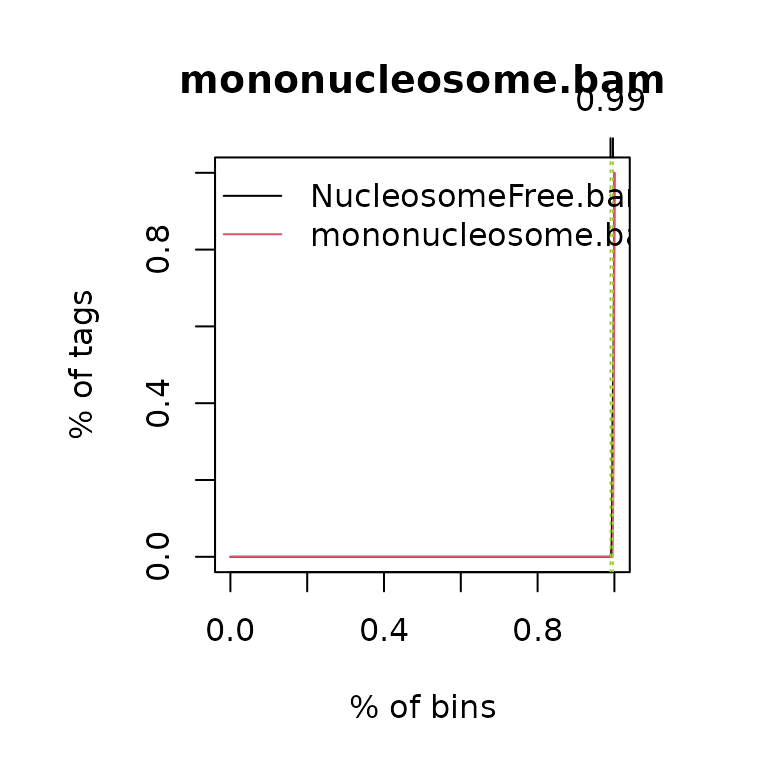
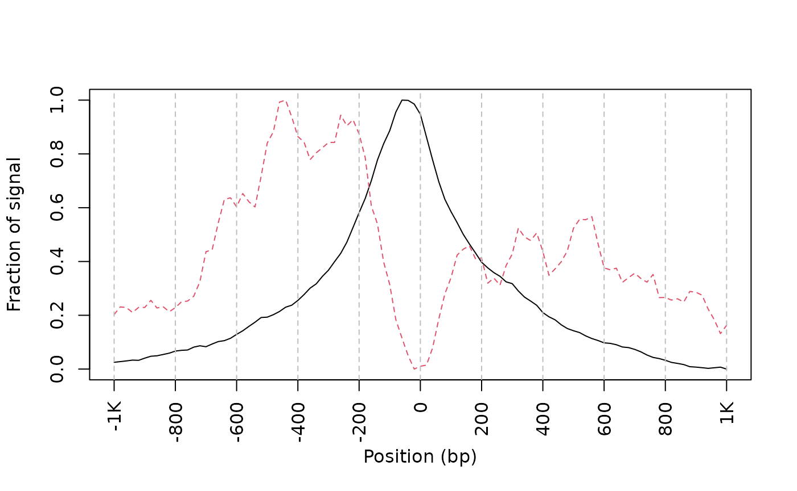
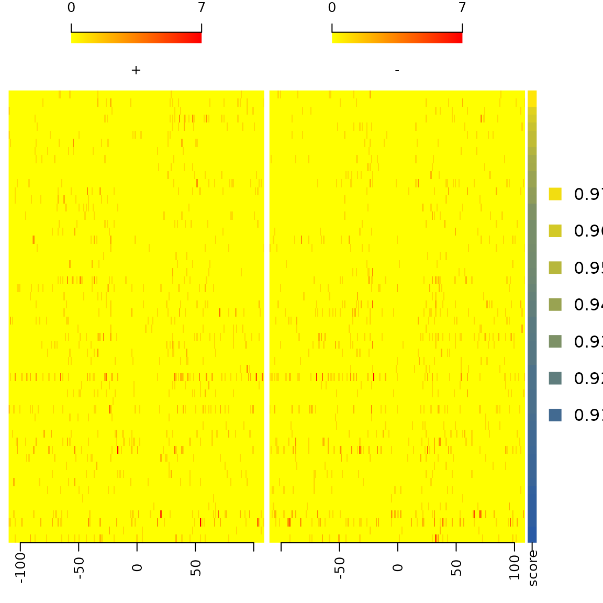
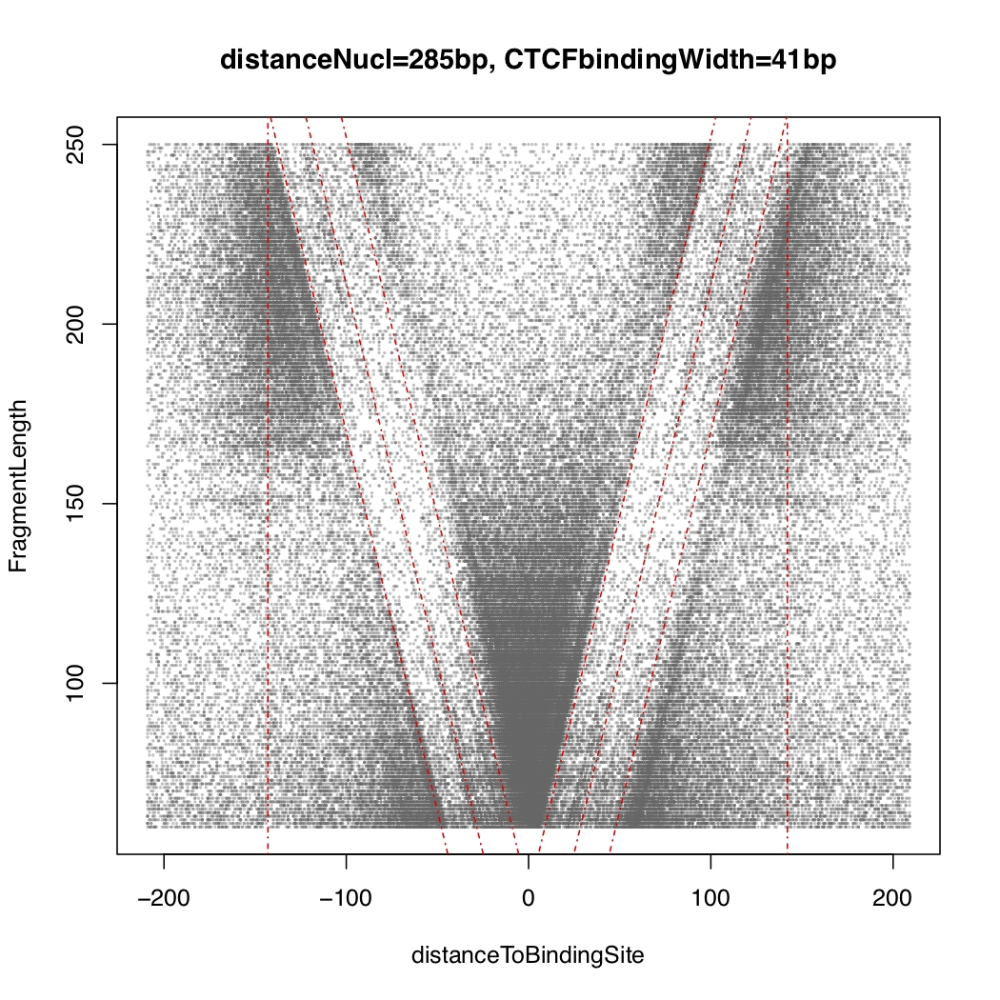

ATACseqQC Guide
Jianhong Ou, Haibo Liu, Jun Yu, Michelle Kelliher, Lucio Castilla, Nathan Lawson, Lihua Julie Zhu
2 April 2021
ATACseqQC.RmdIntroduction
Assay for Transposase-Accessible Chromatin using sequencing (ATAC-seq) is an alternative or complementary technique to MNase-seq, DNase-seq, and FAIRE-seq for chromatin accessibility analysis. The results obtained from ATAC-seq are similar to those from DNase-seq and FAIRE-seq. ATAC-seq is gaining popularity because it does not require cross-linking, has higher signal to noise ratio, requires a much smaller amount of biological material and is faster and easier to perform, compared to other techniques.1
To help researchers quickly assess the quality of ATAC-seq data, we have developed the ATACseqQC package for easily making diagnostic plots following the published guidelines.1 In addition, it has functions to preprocess ATACseq data for subsequent peak calling.
Quick start
Here is an example using ATACseqQC with a subset of published ATAC-seq data1. Currently, only bam input file format is supported.
First install ATACseqQC and other packages required to run the examples. Please note that the example dataset used here is from human. To run analysis with dataset from a different species or differnt assembly, please install the corresponding BSgenome, TxDb and phastCons. For example, to analyze mouse data aligned to mm10, please install BSgenome.Mmusculus.UCSC.mm10, TxDb.Mmusculus.UCSC.mm10.knownGene and phastCons60way.UCSC.mm10. Please note that phstCons60way.UCSC.mm10 is optional, which can be obtained according to the vignettes of GenomicScores.
library(BiocManager)
BiocManager::install(c("ATACseqQC", "ChIPpeakAnno", "MotifDb", "GenomicAlignments",
"BSgenome.Hsapiens.UCSC.hg19", "TxDb.Hsapiens.UCSC.hg19.knownGene",
"phastCons100way.UCSC.hg19"))
## load the library
library(ATACseqQC)
## input the bamFile from the ATACseqQC package
bamfile <- system.file("extdata", "GL1.bam",
package="ATACseqQC", mustWork=TRUE)
bamfile.labels <- gsub(".bam", "", basename(bamfile))IGV snapshot
Source code of IGVSnapshot function is available in extdata folder. To call the function, please try
source(system.file("extdata", "IGVSnapshot.R", package = "ATACseqQC"))Estimate the library complexity
#bamQC(bamfile, outPath=NULL)
estimateLibComplexity(readsDupFreq(bamfile))Fragment size distribution
First, there should be a large proportion of reads with less than 100 bp, which represents the nucleosome-free region. Second, the fragment size distribution should have a clear periodicity, which is evident in the inset figure, indicative of nucleosome occupacy (present in integer multiples).
## generate fragement size distribution
fragSize <- fragSizeDist(bamfile, bamfile.labels)Nucleosome positioning
Adjust the read start sites
Tn5 transposase has been shown to bind as a dimer and inserts two adaptors into accessible DNA locations separated by 9 bp.2
Therefore, for downstream analysis, such as peak-calling and footprinting, all reads in input bamfile need to be shifted. The function shiftGAlignmentsList can be used to shift the reads. By default, all reads aligning to the positive strand are offset by +4bp, and all reads aligning to the negative strand are offset by -5bp.1
The adjusted reads will be written into a new bamfile for peak calling or footprinting.
## bamfile tags to be read in
possibleTag <- list("integer"=c("AM", "AS", "CM", "CP", "FI", "H0", "H1", "H2",
"HI", "IH", "MQ", "NH", "NM", "OP", "PQ", "SM",
"TC", "UQ"),
"character"=c("BC", "BQ", "BZ", "CB", "CC", "CO", "CQ", "CR",
"CS", "CT", "CY", "E2", "FS", "LB", "MC", "MD",
"MI", "OA", "OC", "OQ", "OX", "PG", "PT", "PU",
"Q2", "QT", "QX", "R2", "RG", "RX", "SA", "TS",
"U2"))
library(Rsamtools)
bamTop100 <- scanBam(BamFile(bamfile, yieldSize = 100),
param = ScanBamParam(tag=unlist(possibleTag)))[[1]]$tag
tags <- names(bamTop100)[lengths(bamTop100)>0]
tags## integer2 integer13 character16
## "AS" "NM" "MD"
## files will be output into outPath
outPath <- "splited"
dir.create(outPath)
## shift the coordinates of 5'ends of alignments in the bam file
library(BSgenome.Hsapiens.UCSC.hg19)
seqlev <- "chr1" ## subsample data for quick run
which <- as(seqinfo(Hsapiens)[seqlev], "GRanges")
gal <- readBamFile(bamfile, tag=tags, which=which, asMates=TRUE, bigFile=TRUE)
shiftedBamfile <- file.path(outPath, "shifted.bam")
gal1 <- shiftGAlignmentsList(gal, outbam=shiftedBamfile)Promoter/Transcript body (PT) score
PT score is calculated as the coverage of promoter divided by the coverage of its transcript body. PT score will show if the signal is enriched in promoters.
Nucleosome Free Regions (NFR) score
NFR score is a ratio between cut signal adjacent to TSS and that flanking the corresponding TSS. Each TSS window of 400 bp is first divided into 3 sub-regions: the most upstream 150 bp (n1), the most downstream of 150 bp (n2), and the middle 100 bp (nf). Then the number of fragments with 5’ ends overlapping each region are calculated for each TSS. The NFR score for each TSS is calculated as NFR-score = log2(nf) - log2((n1+n2)/2). A plot can be generated with the NFR scores as Y-axis and the average signals of 400 bp window as X-axis, very like a MA plot for gene expression data.
Transcription Start Site (TSS) Enrichment Score
TSS enrichment score is a raio between aggregate distribution of reads centered on TSSs and that flanking the corresponding TSSs. TSS score = the depth of TSS (each 100bp window within 1000 bp each side) / the depth of end flanks (100bp each end). TSSE score = max(mean(TSS score in each window)). TSS enrichment score is calculated according to the definition at https://www.encodeproject.org/data-standards/terms/#enrichment. Transcription start site (TSS) enrichment values are dependent on the reference files used; cutoff values for high quality data are listed in the following table from https://www.encodeproject.org/atac-seq/.
tsse <- TSSEscore(gal1, txs)
tsse$TSSEscore## [1] 26.87021
plot(100*(-9:10-.5), tsse$values, type="b",
xlab="distance to TSS",
ylab="aggregate TSS score")Split reads
The shifted reads will be split into different bins, namely nucleosome free, mononucleosome, dinucleosome, and trinucleosome. Shifted reads that do not fit into any of the above bins will be discarded. Splitting reads is a time-consuming step because we are using random forest to classify the fragments based on fragment length, GC content and conservation scores.3
By default, we assign the top 10% of short reads (reads below 100_bp) as nucleosome-free regions and the top 10% of intermediate length reads as (reads between 180 and 247 bp) mononucleosome. This serves as the training set to classify the rest of the fragments using random forest. The number of the tree will be set to 2 times of square root of the length of the training set.
library(phastCons100way.UCSC.hg19)
## run program for chromosome 1 only
txs <- txs[seqnames(txs) %in% "chr1"]
genome <- Hsapiens
## split the reads into NucleosomeFree, mononucleosome,
## dinucleosome and trinucleosome.
## and save the binned alignments into bam files.
objs <- splitGAlignmentsByCut(gal1, txs=txs, genome=genome, outPath = outPath,
conservation=phastCons100way.UCSC.hg19)
## list the files generated by splitGAlignmentsByCut.
dir(outPath)## [1] "dinucleosome.bam" "dinucleosome.bam.bai" "inter1.bam"
## [4] "inter1.bam.bai" "inter2.bam" "inter2.bam.bai"
## [7] "inter3.bam" "inter3.bam.bai" "mononucleosome.bam"
## [10] "mononucleosome.bam.bai" "NucleosomeFree.bam" "NucleosomeFree.bam.bai"
## [13] "others.bam" "others.bam.bai" "shifted.bam"
## [16] "shifted.bam.bai" "trinucleosome.bam" "trinucleosome.bam.bai"You can also perform shifting, splitting and saving in one step by calling splitBam.
objs <- splitBam(bamfile, tags=tags, outPath=outPath,
txs=txs, genome=genome,
conservation=phastCons100way.UCSC.hg19)Conservation is an optional parameter. If you do not have the conservation score or you would like to simply split the bam files using the fragment length, then you will just need to run the command without providing the conservation argument. Without setting the conservation parameter, it will run much faster.
Heatmap and coverage curve for nucleosome positions
By averaging the signal across all active TSSs, we should observe that nucleosome-free fragments are enriched at the TSSs, whereas the nucleosome-bound fragments should be enriched both upstream and downstream of the active TSSs and display characteristic phasing of upstream and downstream nucleosomes. Because ATAC-seq reads are concentrated at regions of open chromatin, users should see a strong nucleosome signal at the +1 nucleosome, but the signal decreases at the +2, +3 and +4 nucleosomes.
library(ChIPpeakAnno)
bamfiles <- file.path(outPath,
c("NucleosomeFree.bam",
"mononucleosome.bam",
"dinucleosome.bam",
"trinucleosome.bam"))
## Plot the cumulative percentage of tag allocation in nucleosome-free
## and mononucleosome bam files.
cumulativePercentage(bamfiles[1:2], as(seqinfo(Hsapiens)["chr1"], "GRanges"))
TSS <- promoters(txs, upstream=0, downstream=1)
TSS <- unique(TSS)
## estimate the library size for normalization
(librarySize <- estLibSize(bamfiles))## splited/NucleosomeFree.bam splited/mononucleosome.bam
## 33384 2139
## splited/dinucleosome.bam splited/trinucleosome.bam
## 2030 451
## calculate the signals around TSSs.
NTILE <- 101
dws <- ups <- 1010
sigs <- enrichedFragments(gal=objs[c("NucleosomeFree",
"mononucleosome",
"dinucleosome",
"trinucleosome")],
TSS=TSS,
librarySize=librarySize,
seqlev=seqlev,
TSS.filter=0.5,
n.tile = NTILE,
upstream = ups,
downstream = dws)
## log2 transformed signals
sigs.log2 <- lapply(sigs, function(.ele) log2(.ele+1))
#plot heatmap
featureAlignedHeatmap(sigs.log2, reCenterPeaks(TSS, width=ups+dws),
zeroAt=.5, n.tile=NTILE)
## get signals normalized for nucleosome-free and nucleosome-bound regions.
out <- featureAlignedDistribution(sigs,
reCenterPeaks(TSS, width=ups+dws),
zeroAt=.5, n.tile=NTILE, type="l",
ylab="Averaged coverage")
## rescale the nucleosome-free and nucleosome signals to 0~1
range01 <- function(x){(x-min(x))/(max(x)-min(x))}
out <- apply(out, 2, range01)
matplot(out, type="l", xaxt="n",
xlab="Position (bp)",
ylab="Fraction of signal")
axis(1, at=seq(0, 100, by=10)+1,
labels=c("-1K", seq(-800, 800, by=200), "1K"), las=2)
abline(v=seq(0, 100, by=10)+1, lty=2, col="gray")
plot Footprints
ATAC-seq footprints infer factor occupancy genome-wide. The factorFootprints function uses matchPWM to predict the binding sites using the input position weight matrix (PWM). Then it calculates and plots the accumulated coverage for those binding sites to show the status of the occupancy genome-wide. Unlike CENTIPEDE4, the footprints generated here do not take the conservation (PhyloP) into consideration. factorFootprints function could also accept the binding sites as a GRanges object.
## foot prints
library(MotifDb)
CTCF <- query(MotifDb, c("CTCF"))
CTCF <- as.list(CTCF)
print(CTCF[[1]], digits=2)## 1 2 3 4 5 6 7 8 9 10 11 12 13
## A 0.10 0.16 0.30 0.072 0.012 0.786 0.024 0.122 0.914 0.012 0.376 0.022 0.028
## C 0.36 0.21 0.10 0.826 0.966 0.024 0.620 0.494 0.010 0.008 0.010 0.022 0.002
## G 0.12 0.41 0.44 0.050 0.012 0.108 0.336 0.056 0.048 0.976 0.602 0.606 0.962
## T 0.42 0.22 0.16 0.052 0.010 0.082 0.020 0.328 0.028 0.004 0.012 0.350 0.008
## 14 15 16 17 18 19
## A 0.024 0.096 0.424 0.086 0.12 0.34
## C 0.016 0.818 0.024 0.532 0.35 0.26
## G 0.880 0.038 0.522 0.326 0.12 0.32
## T 0.080 0.048 0.030 0.056 0.41 0.08
sigs <- factorFootprints(shiftedBamfile, pfm=CTCF[[1]],
genome=genome,
min.score="90%", seqlev=seqlev,
upstream=100, downstream=100)
featureAlignedHeatmap(sigs$signal,
feature.gr=reCenterPeaks(sigs$bindingSites,
width=200+width(sigs$bindingSites[1])),
annoMcols="score",
sortBy="score",
n.tile=ncol(sigs$signal[[1]]))
sigs$spearman.correlation## $`+`
##
## Spearman's rank correlation rho
##
## data: predictedBindingSiteScore and highest.sig.windows
## S = 2483380, p-value = 1.454e-05
## alternative hypothesis: true rho is not equal to 0
## sample estimates:
## rho
## 0.2595536
##
##
## $`-`
##
## Spearman's rank correlation rho
##
## data: predictedBindingSiteScore and highest.sig.windows
## S = 2697867, p-value = 0.001185
## alternative hypothesis: true rho is not equal to 0
## sample estimates:
## rho
## 0.1956021
sigs$Profile.segmentation## pos distal_abun proximal_abun binding
## 55.75000000 0.09731340 0.14611895 0.05690943Here is the CTCF footprints for the full dataset. 
V-plot
V-plot is a plot to visualize fragment midpoint vs length for a given transcription factors.
vp <- vPlot(shiftedBamfile, pfm=CTCF[[1]],
genome=genome, min.score="90%", seqlev=seqlev,
upstream=200, downstream=200,
ylim=c(30, 250), bandwidth=c(2, 1))
distanceDyad(vp, pch=20, cex=.5)
Here is the CTCF vPlot for the full dataset. 
Plot correlations for multiple samples
path <- system.file("extdata", package="ATACseqQC", mustWork=TRUE)
bamfiles <- dir(path, "*.bam$", full.name=TRUE)
gals <- lapply(bamfiles, function(bamfile){
readBamFile(bamFile=bamfile, tag=character(0),
which=GRanges("chr1", IRanges(1, 1e6)),
asMates=FALSE)
})
library(TxDb.Hsapiens.UCSC.hg19.knownGene)
txs <- transcripts(TxDb.Hsapiens.UCSC.hg19.knownGene)
library(GenomicAlignments)
plotCorrelation(GAlignmentsList(gals), txs, seqlev="chr1")Session Info
## R Under development (unstable) (2021-03-18 r80099)
## Platform: x86_64-pc-linux-gnu (64-bit)
## Running under: Ubuntu 20.04.2 LTS
##
## Matrix products: default
## BLAS/LAPACK: /usr/lib/x86_64-linux-gnu/openblas-pthread/libopenblasp-r0.3.8.so
##
## locale:
## [1] LC_CTYPE=en_US.UTF-8 LC_NUMERIC=C
## [3] LC_TIME=en_US.UTF-8 LC_COLLATE=en_US.UTF-8
## [5] LC_MONETARY=en_US.UTF-8 LC_MESSAGES=C
## [7] LC_PAPER=en_US.UTF-8 LC_NAME=C
## [9] LC_ADDRESS=C LC_TELEPHONE=C
## [11] LC_MEASUREMENT=en_US.UTF-8 LC_IDENTIFICATION=C
##
## attached base packages:
## [1] stats4 parallel stats graphics grDevices utils datasets
## [8] methods base
##
## other attached packages:
## [1] GenomicAlignments_1.27.2
## [2] Rsamtools_2.7.1
## [3] SummarizedExperiment_1.21.1
## [4] MatrixGenerics_1.3.1
## [5] matrixStats_0.58.0
## [6] MotifDb_1.33.0
## [7] phastCons100way.UCSC.hg19_3.7.2
## [8] GenomicScores_2.3.4
## [9] TxDb.Hsapiens.UCSC.hg19.knownGene_3.2.2
## [10] GenomicFeatures_1.43.7
## [11] AnnotationDbi_1.53.1
## [12] Biobase_2.51.0
## [13] BSgenome.Hsapiens.UCSC.hg19_1.4.3
## [14] BSgenome_1.59.2
## [15] rtracklayer_1.51.5
## [16] Biostrings_2.59.2
## [17] XVector_0.31.1
## [18] ChIPpeakAnno_3.25.4
## [19] GenomicRanges_1.43.3
## [20] GenomeInfoDb_1.27.8
## [21] IRanges_2.25.6
## [22] ATACseqQC_1.15.7
## [23] S4Vectors_0.29.9
## [24] BiocGenerics_0.37.1
##
## loaded via a namespace (and not attached):
## [1] AnnotationHub_2.23.2 BiocFileCache_1.15.1
## [3] systemfonts_1.0.1 lazyeval_0.2.2
## [5] splines_4.1.0 BiocParallel_1.25.5
## [7] ggplot2_3.3.3 digest_0.6.27
## [9] ensembldb_2.15.2 htmltools_0.5.1.1
## [11] fansi_0.4.2 magrittr_2.0.1
## [13] memoise_2.0.0 grImport2_0.2-0
## [15] InteractionSet_1.19.0 limma_3.47.12
## [17] askpass_1.1 pkgdown_1.6.1
## [19] prettyunits_1.1.1 jpeg_0.1-8.1
## [21] colorspace_2.0-0 blob_1.2.1
## [23] rappdirs_0.3.3 textshaping_0.3.3
## [25] xfun_0.22 dplyr_1.0.5
## [27] crayon_1.4.1 RCurl_1.98-1.3
## [29] jsonlite_1.7.2 graph_1.69.0
## [31] survival_3.2-10 glue_1.4.2
## [33] gtable_0.3.0 zlibbioc_1.37.0
## [35] DelayedArray_0.17.10 Rhdf5lib_1.13.4
## [37] HDF5Array_1.19.10 scales_1.1.1
## [39] futile.options_1.0.1 DBI_1.1.1
## [41] edgeR_3.33.3 Rcpp_1.0.6
## [43] xtable_1.8-4 progress_1.2.2
## [45] bit_4.0.4 htmlwidgets_1.5.3
## [47] httr_1.4.2 ellipsis_0.3.1
## [49] pkgconfig_2.0.3 XML_3.99-0.6
## [51] sass_0.3.1 dbplyr_2.1.0
## [53] locfit_1.5-9.4 utf8_1.2.1
## [55] polynom_1.4-0 later_1.1.0.1
## [57] tidyselect_1.1.0 rlang_0.4.10
## [59] munsell_0.5.0 BiocVersion_3.13.1
## [61] tools_4.1.0 cachem_1.0.4
## [63] generics_0.1.0 RSQLite_2.2.5
## [65] ade4_1.7-16 evaluate_0.14
## [67] stringr_1.4.0 fastmap_1.1.0
## [69] yaml_2.2.1 ragg_1.1.2
## [71] knitr_1.31 bit64_4.0.5
## [73] fs_1.5.0 randomForest_4.6-14
## [75] purrr_0.3.4 splitstackshape_1.4.8
## [77] KEGGREST_1.31.1 AnnotationFilter_1.15.0
## [79] RBGL_1.67.0 mime_0.10
## [81] formatR_1.8 xml2_1.3.2
## [83] biomaRt_2.47.6 BiocStyle_2.19.2
## [85] debugme_1.1.0 compiler_4.1.0
## [87] filelock_1.0.2 curl_4.3
## [89] png_0.1-7 interactiveDisplayBase_1.29.0
## [91] preseqR_4.0.0 tibble_3.1.0
## [93] bslib_0.2.4 stringi_1.5.3
## [95] highr_0.8 futile.logger_1.4.3
## [97] desc_1.3.0 lattice_0.20-41
## [99] ProtGenerics_1.23.7 Matrix_1.3-2
## [101] multtest_2.47.0 vctrs_0.3.7
## [103] pillar_1.5.1 lifecycle_1.0.0
## [105] rhdf5filters_1.3.4 BiocManager_1.30.12
## [107] jquerylib_0.1.3 data.table_1.14.0
## [109] bitops_1.0-6 httpuv_1.5.5
## [111] R6_2.5.0 BiocIO_1.1.2
## [113] promises_1.2.0.1 KernSmooth_2.23-18
## [115] motifStack_1.35.0 lambda.r_1.2.4
## [117] MASS_7.3-53.1 assertthat_0.2.1
## [119] rhdf5_2.35.2 openssl_1.4.3
## [121] rprojroot_2.0.2 rjson_0.2.20
## [123] regioneR_1.23.0 GenomeInfoDbData_1.2.4
## [125] hms_1.0.0 VennDiagram_1.6.20
## [127] grid_4.1.0 rmarkdown_2.7
## [129] base64enc_0.1-3 shiny_1.6.0
## [131] restfulr_0.0.13